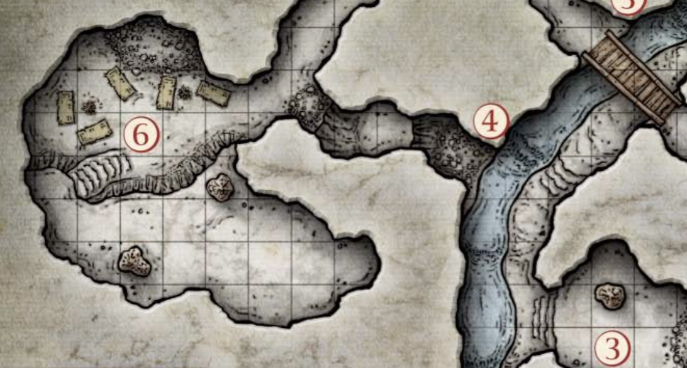

Сесія 1
Загін шукачів пригод:
- Віталік (Доренмор Мітелон, ельф-маг (1))
- Ростик (Джодан Петкеск, людина-чорнокнижник (1))
- Лана (Тівара Еламірта, драконороджена-чародійка (1))
- Іван (Бардрін Боунфіст, дворф-клерик (1))
Пригоди:
 Персонажі зібрались в активно розбудованому недавно місті Невервінтері, аби допомогти дварфу Гандрену Роксікеру супроводити його віз з шахтарським причандаллям і припасами до шахтарського містечка Фандалін, в трьох днях ходьби на південь. Сам Гандрен подався вперед разом зі старим лицарем Сільдаром Холлвінтером, щоби залагодити тим часом певні справи. Видно було, що Роксікер знайшов щось важливе і винагорода в 10 золотих кожному за довезений віз звучала більш ніж переконливо. А дворф мав чекати на торговому посту “Припаси Бартена”, звідки й планував розпочати експедицію з розкопками в горах.
Персонажі зібрались в активно розбудованому недавно місті Невервінтері, аби допомогти дварфу Гандрену Роксікеру супроводити його віз з шахтарським причандаллям і припасами до шахтарського містечка Фандалін, в трьох днях ходьби на південь. Сам Гандрен подався вперед разом зі старим лицарем Сільдаром Холлвінтером, щоби залагодити тим часом певні справи. Видно було, що Роксікер знайшов щось важливе і винагорода в 10 золотих кожному за довезений віз звучала більш ніж переконливо. А дворф мав чекати на торговому посту “Припаси Бартена”, звідки й планував розпочати експедицію з розкопками в горах.
 Звернувши на схід на Тріборський тракт, через півдня ходу загін натрапив на трупи коней Гандрена з Сільдаром, прошитих чорними стрілами. Тут же з засади вискочили гобліни і спробували захопити караван. Гоблінські трупи було заховано в кущах, а чорнокнижник Джодан Петкеск шляхом послідовного виламування пальців вивідав, що Гандрена з Сільдаром потягли в сховок гоблінів Кам’яної Пащеки, що знаходиться на півночі неподалік.
Звернувши на схід на Тріборський тракт, через півдня ходу загін натрапив на трупи коней Гандрена з Сільдаром, прошитих чорними стрілами. Тут же з засади вискочили гобліни і спробували захопити караван. Гоблінські трупи було заховано в кущах, а чорнокнижник Джодан Петкеск шляхом послідовного виламування пальців вивідав, що Гандрена з Сільдаром потягли в сховок гоблінів Кам’яної Пащеки, що знаходиться на півночі неподалік.
 Обійшовши ряд нехитрих пасток, загін відшукав печеру гоблінів з витікаючим з неї джерелом, поклав вартових і знайшов дварфа Бардріна Броунфіста, який приєднався до загону. В печері персонажі знайшли трьох вовків, яких з доброти душевної ел ьф Доренмор разом з Бардріном нагодували та визволили з кайданів. З диким ревом на загін налетів потік води, та змив аж до виходу. Мокрі і сердиті, герої вперто продовжили рух вгору, де були збиті ще більшою масою води. Не бажаючи наступати на граблі тричі, шукачі пригод звернули в боковий прохід, після якого наткнулись на залу, повну гоблінів. Вожак спробував шантажувати героїв побитим до напівсмерті Сільдаром Холлвінтером, та загін був невблаганним. Тіло старого лицаря приземлилось на тверду долівку, а герої почали гинути як мухи. Багато гоблінів вони поклали, та під шаблями і стрілами диких ворогів таки знайшли кінець своєї мандрівки. Дивлячись на тіла полеглих побратимів та борячись з відчайдушним бажанням втекти, драконороджена Тівара Еламірта останннім поривом волі кинулася в гущу ворогів, де й зазирнула в очі смерті.
Підсумки:
- Віталік (Доренмор Мітелон, ельф-маг (1), RIP): 100/300 ХР
- Ростик (Джодан Петкеск, людина-чорнокнижник (1), RIP): 100/300 ХР
- Лана (Тівара Еламірта, драконороджена-чародійка (1), RIP): 100/300 ХР
- Іван (Бардрін Боунфіст, дворф-клерик (1), RIP): 30/300 ХР